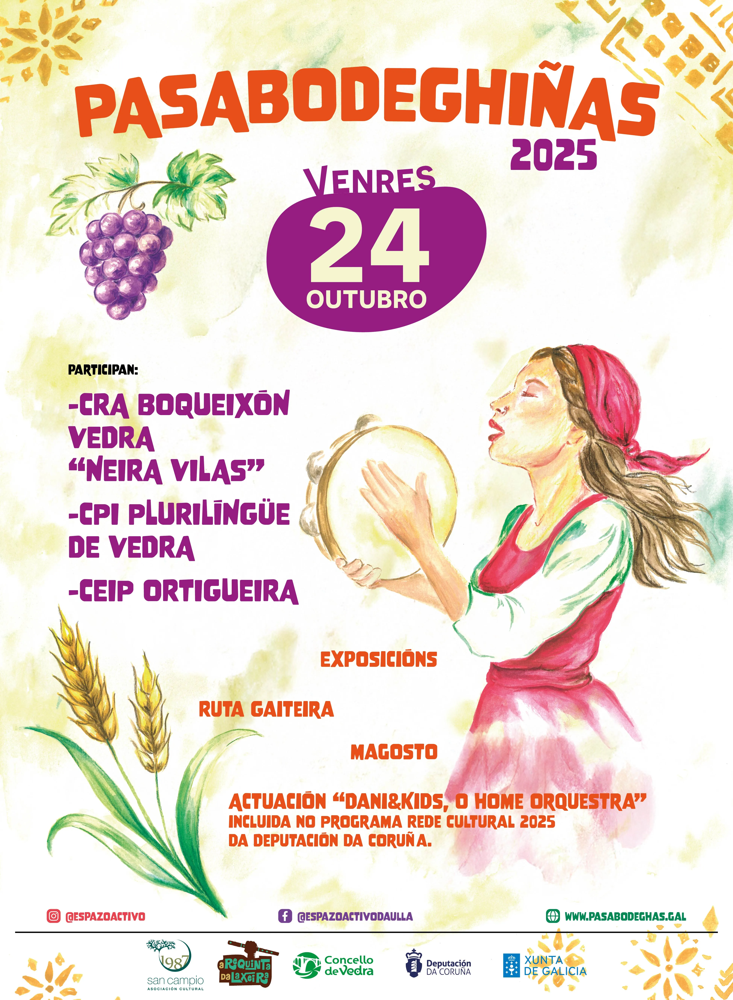
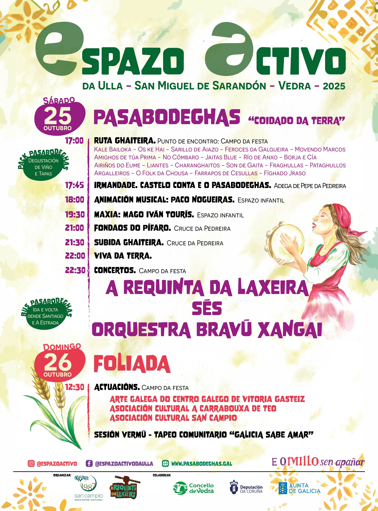
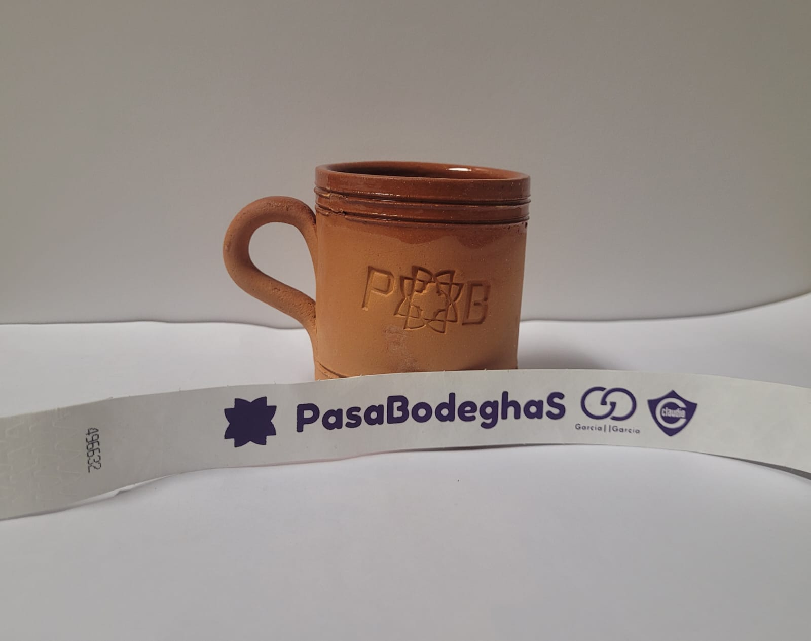

INFORMACIÓN IMPORTANTE
📣📢📢 Non queda nada para a mellor ruta ghaiteira... o PASABODEGHAS! Aquí tedes as actividades, mostras, xogos populares, espectáculos infantiles, tapas e horarios de toda a ruta.
A maiores da adega de Claudino, Pepe da Pedreira, Carmela, Gonzalez, Bouzón, Pegito, Casimiro, Fondal e Picanes este ano súmase a Adega vella de Pereiras.🌰🌰
⛔ Recordamos que ESE DÍA NON SE VENDERÁN PACKS. Só se venderán os packs infantiles para menores de 12 anos. ⛔ (Que terán que ir acompañados dun adulto)
Tedes un modelo de autorización de entrada para os menores que teñan máis de 12 anos e non vaian acompañados, que terán que levar cuberto e firmado.

O Espazo Activo da Ulla é un espazo de cultura, encontro, lecer e animación. Nace no seo da Asociación Cultural San Campio no ano 2001 a partir de contactos persoais entre membros de asociacións.
A realización deste proxecto fundaméntase no valeiro existente de actividades alternativas nesta zona do rural, e na falla de espazos para o encontro; na procura da promoción e a cooperación cultural, a difusión e o espallamento da cultura das terras da Ulla en particular e da galega en xeral.
- Promocionar alternativas socioculturais na comarca da Ulla.
- Favorecer o desenvolvemento comunitario e endóxeno do territorio, poñendo en valor o rural.
- Recuperar espazos para o encontro aproveitando ao máximo os recursos que ofrece a zona.
- Incentivar o espírito creativo, xerando actividades, obradoiros, espectáculos, mostras, concertos…
Ten por obxectivos:
Actualmente realízase na última fin de semana do mes de outubro. Durante estes dous días xérase un gran espazo aberto e de convivencia, fomentando o intercambio de experiencias entre os asistentes, e entre estes e mailos veciños/as da zona a través das diferentes actividades.
A actividades estrela é o “Pasabodeghas” que se celebra o sábado pola tarde; unha ruta gaiteira por adegas-casas que se converten en espazos de gastronomía e cultura.
Pola noite no espazo “Festexarte” teñen lugar os concertos de grupos de música folk, ska, rock...
O domingo celébrase unha foliada con sesión vermú e tapeo.
A nivel xeral, hai un bo nivel de participación e implicación. Cóntase coa colaboración de diferentes axentes comunitarios (asociacións, grupos musicais, empresas, organismos públicos)… e tamén de particulares.
En definitiva, este proxecto interxeracional busca un uso activo e creativo do lecer da poboación xeral (nenos/as, mocidade, persoas adultas e maiores) ao tempo que pon en valor as manifestacións culturais galegas como parte do noso patrimonio cultural.


O "Pasabodeghas" é unha experiencia para desfrutar xente de tódalas idades; dende a cativada, pasando pola mocidade…e ata as persoas maiores.
Ten por obxectivo recuperar espazos para o encontro aproveitando ao máximo os recursos que ofrece a zona (adegas, eiras, camiños… viños, tapas…). Nos diferentes espazos encóntranse obradoiros, xogos populares, exposicións, postos de artesanía, produtos da terra, espectáculos de teatro, circo, animación, grupos de música tradicional, espazos de expresión e creación…
Nesta andaina comunitaria están implicados/as un amplo abano de colaboradores/as: adegueiros/as, veciños/as, grupos de música tradicional, voluntarios/as, as persoas que ceden exposicións, patrocinadores/as, o Concello de Vedra, a Deputación da Coruña, a Xunta de Galicia, os medios de comunicación…e ti…festeiro/a .
En definitiva, o "Pasabodeghas" busca que as persoas que asistan, descubran o sentir da aldea, coñezan as tradicións, os costumes, a gastronomía, a música e as súas xentes.
- Espazo Infantil, con obradoiros e espectáculos, apto para tódolos públicos e para desfrutar en familia
- Espazo de xogos populares para recuperar as tradicións
- Postos de artesanía con produtos locais
- Exposicións culturais distribuídas nas 9 adegas
- Música tradicional ao longo da tarde en diferentes espazos
- Viva da terra
- A famosa subida "ghaiteira" dende o cruce da Pedreira, rematando cun espectáculo nocturno
- Concertos de música folk e tradicional
Qué te vas atopar?


Cartel do Festival
Concurso de Carteis 2025
Este ano celebramos un concurso de carteis para a elección do deseño do 2025 no cal participaron 10 traballos.
Gañadora do Concurso
Patricia Riveira Laceiras
Un cartel que mostra o espirito do Pasabodeghas, e tamén das letras galegas que este ano foron adicadas á poesía popular oral, personificada nas cantareiras e pandeireteiras.

Programa


CENTRO DE INTERESE: “COIDADO DA TERRA”
O Coidado da Terra será o centro de interese nesta edición, xa que todas as persoas temos a responsabilidade de protexer e respectar o noso planeta, garantindo un futuro sostible para as vindeiras xeracións.
A Terra está a sufrir os efectos do cambio climático, da deforestación e da contaminación entre outros. Se non actuamos, periga a saúde do planeta e tamén a nosa.
Para concienciar sobre esta temática contaremos con exposicións e materiais didácticos do Consello da Cultura Galega, CEIDA, ADEGA, Amabul, MARCO, Voluntariado Interxeracional do Concello de Vedra, Agadea, Raiceiros, GDR Terras de Compostela, CRA Boqueixón-Vedra “Neira Vilas”, CPI Vedra e CEIP Ortigueira.
IRMANDADE CO FESTIVAL “CASTELO CONTA”
Cada ano realizamos unha irmandade cun proxecto desenvolvido no medio rural.
Trátase de poñer en valor iniciativas do rural destacando o seu valor social, cultural e ambiental, visibilizando boas prácticas que protexan e dinamicen o territorio e que fomenten orgullo e identidade.
Nesta edición acollemos aos compañeiros/as do Festival Castelo Conta; unha iniciativa dos veciños e veciñas do Castelo (Culleredo), que achega comedia, tradición oral e cultura no rural.
Concertos

SES

ORQUESTRA BRAVÚ XANGAI
Servizos

Aparcadoiro Gratuíto
Ampla zona de estacionamento sen custo para tod@s @s asistentes

Zona de Acampada
Espazo habilitado para tendas de campaña e autocaravanas

Baños Portátiles
Servizos hixiénicos distribuídos por todo o recinto

Asistencia Sanitaria
Equipo médico e ambulancia durante todo o evento

Seguros
Cobertura completa para garantir a seguridade do evento

Trens Turísticos
Transporte entre adegas para unha mellor experiencia

Zona Gastronómica
Pulpeiro, posto de bocadillos e bebidas no espazo de concertos

Puntos lila e arcoiris
Espazo seguro contra a violencia de xénero e de apoio á diversidade LGTBI
Pack Pasabodeghas
Para acceder ao recinto débese adquirir o “Packs Pasabodeghas” (será un número limitado).
O “Pasabodeghas” non é gratis, o/a maior patrocinador/a eres ti colaborando coa adquisión do “Pack Pasabodeghas” que che dará acceso ao recinto. Esta é a maneira de financiar un amplo programa de actividades, degustacións…
- “Pack Pasabodeghas xeral” (de 18 anos en diante): Inclúe: xerro de barro, degustación de viño, refrescos e tapa nas 10 adegas, ambiente festeiro con música tradicional, espectáculos, mostras, concertos…
- “Pack Pasabodeghas xuvenil”(de 12 a 17 anos): Inclúe: xerro de barro, degustación de refrescos e tapa nas 10 adegas, ambiente festeiro con música tradicional, espectáculos, mostras, concertos….
Os menores de 18 anos non poderán consumir bebidas alcohólicas.
- Os/as menores de 12 anos poderán acceder ao recinto de forma libre, pero precisan vir acompañados/as dun adulto responsable para poder entrar.
De forma opcional poden adquirir o “Pack Infantil”: Inclúe: un xerro infantil, lambetadas, degustación de refrescos…e moito máis.

Pasabodeghas Bus
BUS DE IDA E VOLTA DENDE SANTIAGO
- Orixe (ida): Parada bus Corte Inglés (16:00 h.)
- Orixe (volta): Casa de Cultura de San Miguel de Sarandón (2:30 h. /hora nova)
BUS DE IDA E VOLTA DENDE A ESTRADA
- Orixe (ida): Restaurante Río Liñares (16:00 h.), Casa do Concello da Estrada (16:15 h.)
- Orixe (volta): Casa de Cultura de San Miguel de Sarandón (2:30 h. /hora nova)
Podes adquirir o Pack Pasabodeghas e os tickets de bus en:
( A partir das 19:00 h. do 3 de outubro)
VEDRA
- CENTRO COMERCIAL GARCÍA&GARCÍA
- CAFÉ BAR DERBY
- TABERNA O PATIO DE MÓNICA
- CAFÉ BAR A DORNA
BOQUEIXÓN
- LIBRERÍA LINO
TEO
- CASA PERNAS
SANTIAGO
- NOZZEO + BUS DENDE SANTIAGO
- VIÑOTECA VENTOSELA + BUS DENDE SANTIAGO
- VIÑOTECA A TIXOLA + BUS DENDE SANTIAGO
A ESTRADA
- A RIALA + BUS DENDE A ESTRADA
- HAMBURGUESERÍA FLORIDA
- RESTAURANTE RÍO LIÑARES + BUS DENDE A ESTRADA
LALÍN
- A TABERNA DO VENTO
Edicións anteriores


Preguntas Frecuentes
A partir dos 12 anos É NECESARIO O PACK PASABODEGHAS PARA ACCEDER Á RUTA.
De 12 a 18 anos só poden consumir bebidas non alcohólicas (refrescos e auga).
Os menores de 12 anos entran gratis acompañados dun adulto, e poden mercar un pack infantil o día do evento, que inclúe xerro infantil, pulseira, lambonadas.
Inclúe xerro de barro, pulseira, degustación de bebidas e tapas, ambiente festeiro con música tradicional, espectáculos, mostras, concertos...
Ubicación

Participando, apoiando, compartindo, colaborando, construíndo, …poderemos dicir…
Pasabodeghas…e o millo?...sen apañar!